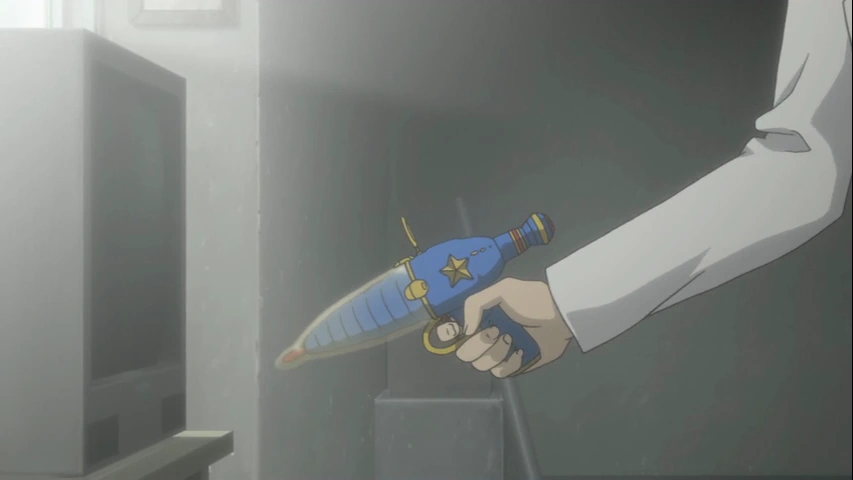
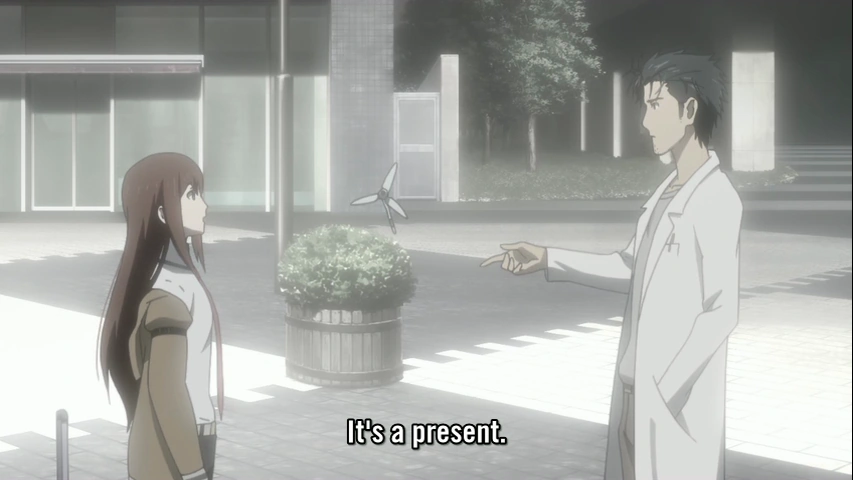
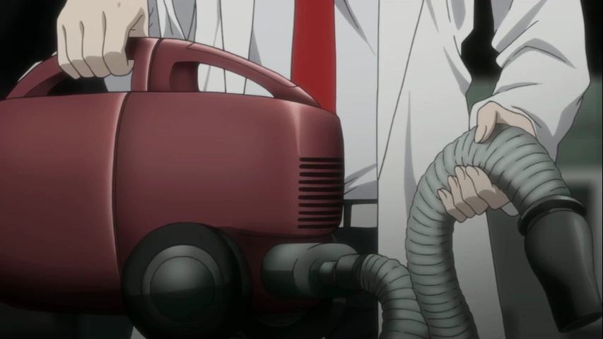
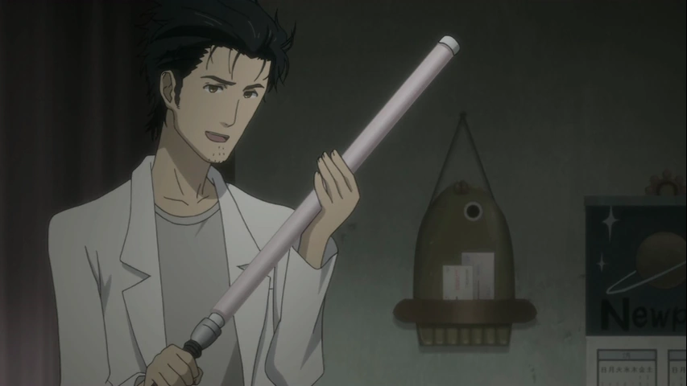
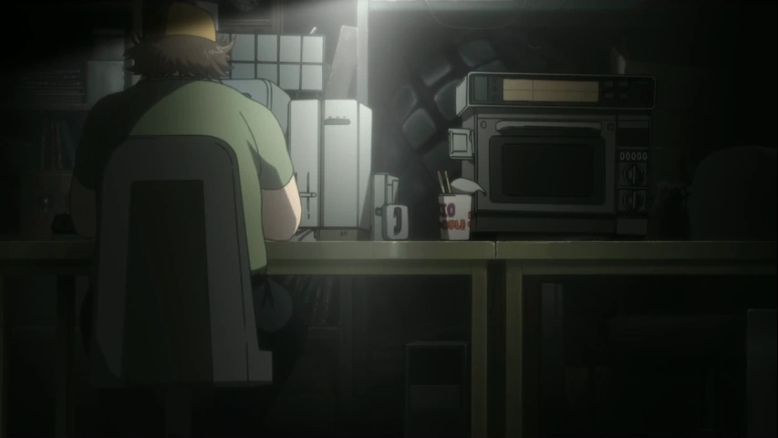
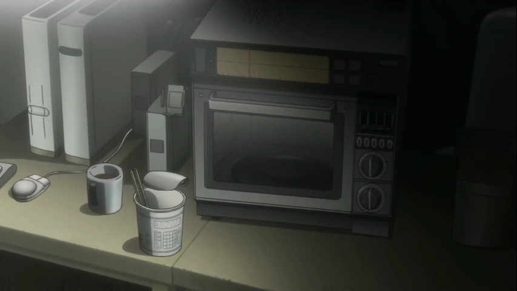
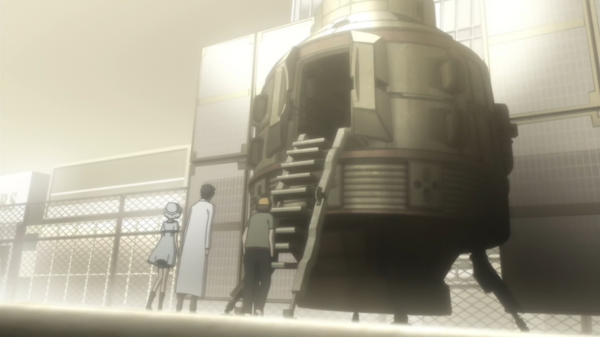

| Название | Фото | Описание | Особенности |
|---|---|---|---|
| Гаджет Будущего #1: Частичковая пушка |  |
Вещь, объединяющая телевизионный пульт и игрушечный лазерный пистолет. Направив пистолет на телевизор и нажав курок, можно сменить канал, словно стреляя из пистолета. А теперь вспомни детство! |
Действует только кнопка следующий канал. Для других действий (питание, громкость и т.д.) вам нужно нажать кнопку на самом телевизоре. |
|
Гаджет Будущего #2: Камера-бамбукоптер альтернативное издание Ver.2.67 |
 |
ПЗС-камера на вращающейся летающей игрушке. Когда объединяются новейшее аудио-визуальное оборудование и традиционные японские изделия, грань между прошлым и будущим исчезает, и воплощается грандиозная функция - воздушная съёмка без приложения усилий. |
Записанное видео сильно вращается, но это не неисправность или что-то такое. В связи с этим, пожалуйста, никаких претензий. |
|
Гаджет Будущего #3: «Будет ли «ОРА ОРА!?!?» |
Детектор лжи, основанный на потении большого пальца. Это лучший в мире шедевр, создание которого стало возможным благодаря всеобщим усилием всей лаборатории. С его помощью вы можете распознать всю ложь и раскрыть любые заговоры. |
Это устройство лишь определяет уровень пота. Может ли оно на самом деле определять ложь гарантировать не могу. |
|
|
Гаджет Будущего #4: Змея-мод |
Ультрамгновенный увлажнитель. С помощью электричества кипятится большое, огромное количество воды, а затем оно выпускается в виде громадного количества пара. Больше не нужно бояться сухого сезона. Из-за её сходства с миной клеймор её также можно использовать для украшения дома. | Применять на площади в 10 квадратных метров. Этот Гаджет Будущего одноразовый и уже был использован. | |
|
Гаджет Будущего #5: «Опять я соединил что-то бесполезное, от Гоэмона» |
>  |
С этим феном не нужно платить за электричество. Соединив его с пылесосом, мы смогли использовать
выхлопное отверстие в качестве фена. Безумно, но экономично. Противоречие лежит в основе взрывного рождения этого многострадального изобретения. | Этот фен может использовать только горячий воздух, и ты не можешь регулировать горячий поток воздуха. |
| Гаджет Будущего #6: Сайлюмный меч |  |
Заполнен дифенил оксалатом красного цвета. Установив рукоять, его также можно держать как меч.
Революционная идея с кровавой жидкостью позволяет добавить в импровизационный поединок реализма. |
Пожалуйста, не размахивайте им в узком пространстве. Присутствует возможность того, что кровавая
жидкость выплеснется и доставит неприятности окружающим.. |
|
Гаджет Будущего #7: Шар-активная оболочка оптического камуфляжа |
 |
Большая штуковина, с которой вы можете опробовать искусственный оптический камуфляж. Оно сделано
из шестидюймовых катодно-лучевых трубок в количестве 12 штук, а пространство между ними заполнено множеством КМОП-камер. Камера торчит из шара перпендикулярно монитору сферы, связанному с задней частью этой камеры. В результате слепое пятно пропадает из этой штуки, и у вас есть полный обзор другой стороны, даже если вы прячетесь в тени этого объекта. |
Он просто огромный. Пожалуйста, заказывайте лишь при условии, что у Вас дома достаточно места.
Пожалуйста, не катайте его, иначе сломается. |
|
Гаджет Будущего #8: Мобиловолновка (название временное) |
 |
Благодаря объединению с мобильным телефоном микроволновка обзавелась не только функцией дистанционного управления, но и путешествия во времени. К моменту Вашего возвращения домой, всё уже разогреется! | В данный момент проходит её настройка. Пока не готова к продаже. |
|
Гаджет Будущего #204: 2-е издание 2.31далее |
 | Полноценная машина времени. | Будет закончена сотрудниками лаборатории в 2036 году. |